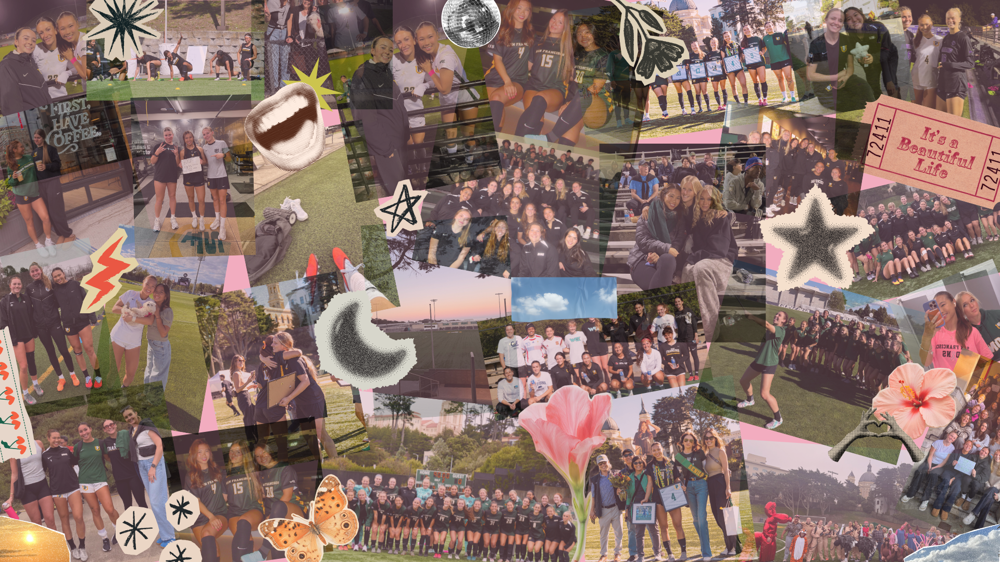
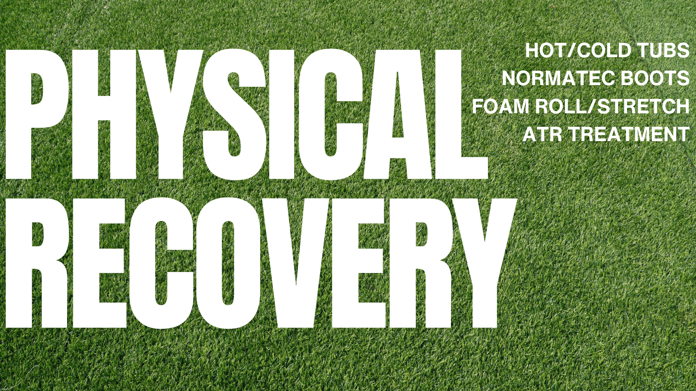
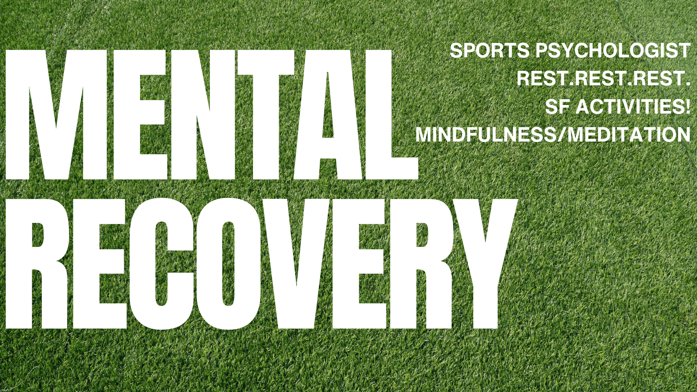
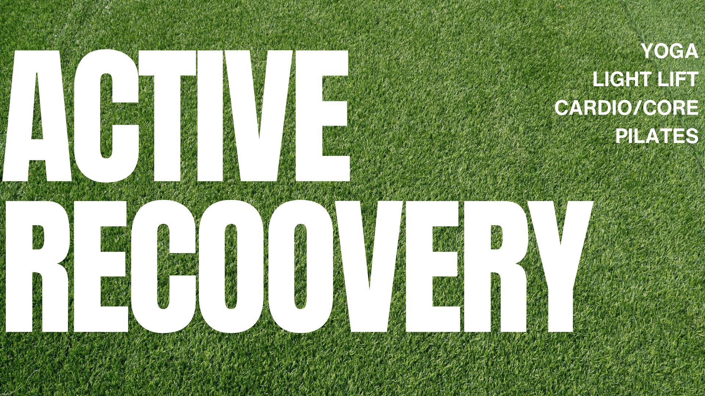

Welcome to the Recovery section! Here we focus on staying healthy both physically and mentally during the season.

Physical recovery is a huge part of staying healthy throughout the season. This includes stretching, mobility work, treatment with our athletic trainers, and using tools like foam rollers or recovery boots after training.

Mental recovery is just as important as physical recovery. Taking time to reset, relax, and step away from soccer helps us stay focused and avoid burnout during long seasons.

Active recovery can include lighter workouts like yoga, pilates, walking around San Francisco, or low-intensity lifts. These sessions help keep our bodies moving while still allowing muscles to recover.